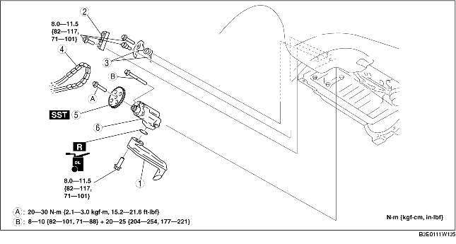

1. Remove the battery cover. (See BATTERY REMOVAL/INSTALLATION [LF].)
2. Disconnect the negative battery cable.
3. Remove the under cover and splash shield as a single unit.
4. Remove the front tire (RH).
5. Drain the engine oil. (See ENGINE OIL REPLACEMENT [LF].)
6. Remove the plug hole plate. (See PLUG HOLE PLATE REMOVAL/INSTALLATION [LF].)
7. Remove the drive belt. (See DRIVE BELT REPLACEMENT [LF].)
8. Set the coolant reserve tank out of the way.
9. Remove the A/C compressor with the pipes still connected. (See A/C COMPRESSOR REMOVAL/INSTALLATION [LF].)
10. Remove the ignition coil. (See IGNITION COIL REMOVAL/INSTALLATION [LF].)
11. Remove the spark plug. (See SPARK PLUG REMOVAL/INSTALLATION [LF].)
12. Set the accelerator cable bracket out of the way.
13. Remove the crankshaft position (CKP) sensor. (See CRANKSHAFT POSITION (CKP) SENSOR REMOVAL/INSTALLATION [LF].)
14. Remove the engine front cover. (See TIMING CHAIN REMOVAL/INSTALLATION [LF].)
15. Remove the oil pan. (See OIL PAN REMOVAL/INSTALLATION [LF].)
16. Remove in the order indicated in the table.
17. Install in the reverse order of removal.
18. Refill the engine with the specified type and amount of the engine oil. (See ENGINE OIL REPLACEMENT [LF].)
19. Start the engine and inspect for oil leakage.
20. Inspect the oil level. (See ENGINE OIL LEVEL INSPECTION [LF].)
21. Inspect for the ignition timing and idle speed. (See ENGINE TUNE-UP [LF].)

.
|
1
|
Oil strainer
|
|
2
|
Oil pump chain guide
|
|
3
|
Oil pump chain tensioner and spring component
|
|
4
|
Oil pump chain
|
|
5
|
Oil pump sprocket
|
|
6
|
Oil pump
(See Oil Pump Installation Note.)
|
1. Install the SST to the oil pump sprocket to stop the oil pump from rotating.
1. Tighten the oil pump bolts in two steps in the order indicated in the figure.